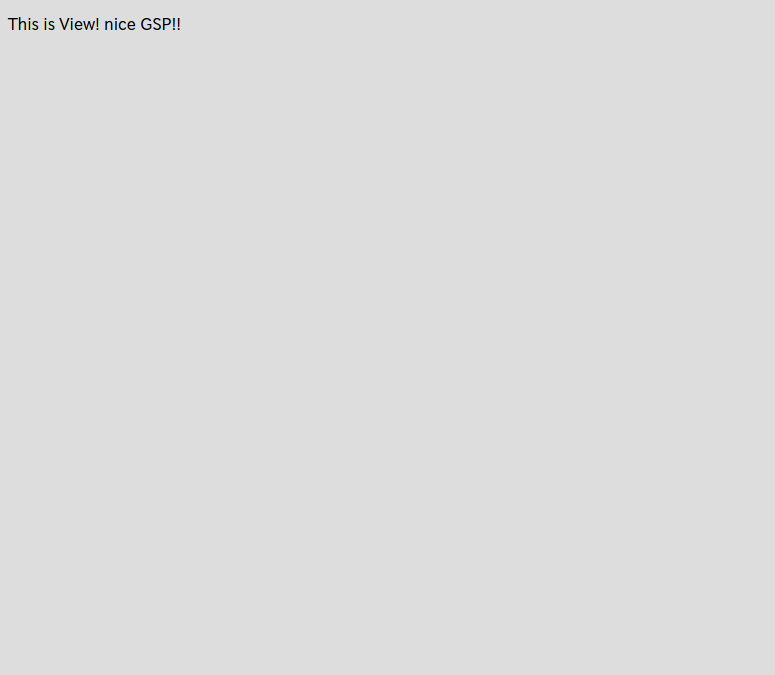

2.3.ビューの作成
MVCでいうV(ビュー)です。 さて、先ほどControllerを作成しました。
では引き続きViewを作成してみましょう。
grails-app/viewsというディレクトリを見てましょう。
先ほど作成したControllerと同じ名前のhelloというディレクトリが有りますね。
先ほど実行したcreate-controllerコマンドは、Controllerを作成すると同時に、同名のディレクトリをviewsの中に自動で作成してくれます｡
そしてGrailsは、ルールとして URLは**・Controller名/Action名** になっています。
そして、Actionの中でViewを直接指定する、もしくは何も指定しない場合は、このルールに則って、grails-app/views/{Controller名}/{Action名}.gspというファイルが表示されます。
それでは、今回はhelloコントローラの、with-viewアクションを、Viewで表示してみましょう。
まず、grails-app/views/helloディレクトリに、withView.gspというファイルを作成します。
拡張子はgspです。これはGroovy Server Pagesの略です。様々な便利な拡張機能が用意されています。
では、中身を以下のようにしてみましょう。
<!DOCTYPE html>
<html>
<head>
<meta charset="UTF-8">
<title>This is View</title>
</head>
<body>
<p>This is View! nice GSP!!</p>
</body>
</html>
では続いて対応するActionを追加しましょう。
package hello_grails
class HelloController {
def index() {
render "Hello World!"
}
// コレを追加
def withView() {
// 中身は無くても、Grailsの規約に則って該当するViewが表示される。
}
}
これで完了です。
ではhttp://localhost:8080/hello/withViewにアクセスしてみましょう。

表示できましたね！ もしアクション名と表示したいGSPファイル名が違う場合は、以下のようにrenderにてGSPファイルの名前を指定することも出来ます。
def withView() {
render(view: '/hello/withView.gsp')
}